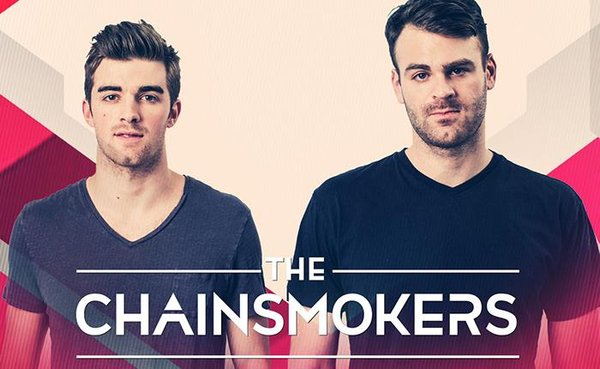

"Music is love in search for a word..."
Tomorrowland is a Belgian electronic dance music festival held in Boom, Belgium. Tomorrowland was first held in 2005. It now stretches over two weekends and usually sells out in minutes. Over the years, the festival's popularity have risen dramstically and now in 2020 it has become a tradition in Belgium. Every summer, hundreds and thousands of tourists all flew into Belgium to take part in arguably the world's best music festivals.

Last year there were 400.000 tourists taking part in this amazing festival and most of them were really happy with it. Tomorrowland was the place where they could express their true self and enjoy the best music from all around the globe. Not only that, they get the chance to meet famous artist in person and also have the opportunity to meet and make new friends. Throughout the week, the festival stays true to it style and name, each day brought a different kind of atmosphere and each is as fascinating as the other. They say "nobody can tell what the future holds" and that saying is perfect for "Tomorrowland" because nobody can know what tomorrow shows going to be like.

GUESTS
Honored guest: Avicii-The amazing DJ that shook the world with many spectacular songs that had embeded into many music lovers' hearts. He suicided in April 2014 due to depression and stress leaving the world with hundreds of amazing songs. As a tribute to Avicii, the organizers decided to customize a feature on the main stage to pay respect to this amazing DJ in both 2018 and 2019
The Chainsmoker
This 2 man band has become viral for the past decades with their amazing popsongs that ruled the America music culture. Their music brings a special melody and feelings that nobody could get from any other music artists, thus creating a special vibe through their music.
Link